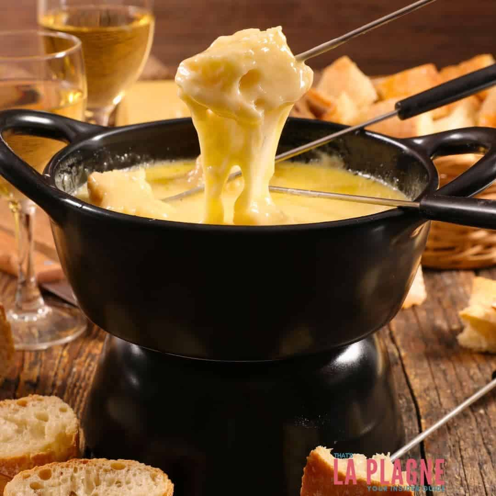
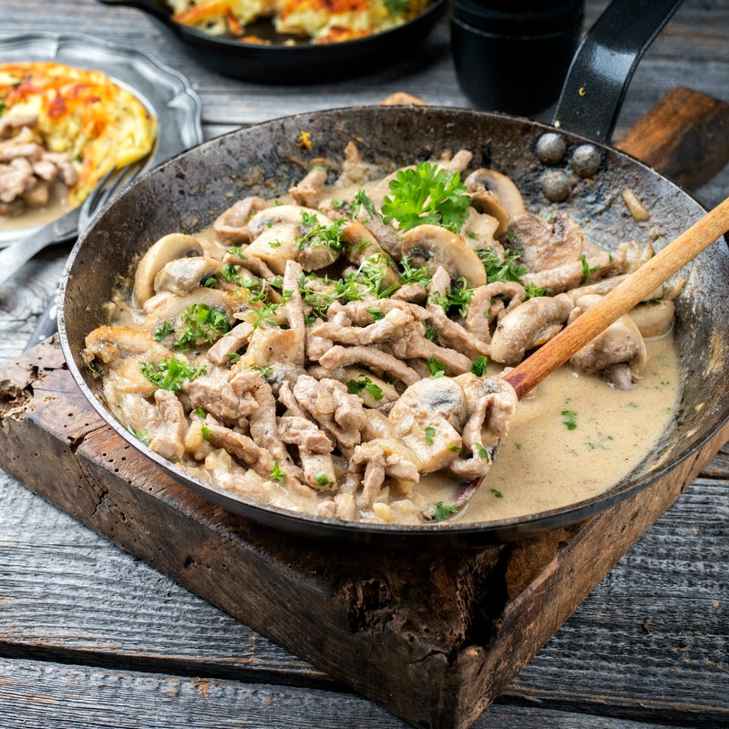

$250
A delicious crab dish served with a special butter sauce and golden decoration.
Fresh crab, butter, garlic, herbs, and special spices.
Our exclusive creation, inspired by luxury European cuisine.
Golden Crab was created for royal dining. It combines fresh crab, rich butter sauce, and golden decoration to create a luxurious dining experience.

$180
A traditional Swiss dish made with melted cheese, served with fresh bread and vegetables
Swiss cheese, garlic, white wine, and fresh bread.
Switzerland, Swiss Alps.
Long ago, people living in the Swiss Alps used local cheese and bread to prepare warm meals during cold winters. They melted cheese in a pot and shared it with their families. This tradition became famous as Swiss Cheese Fondue.

$200
A luxurious cheese dish made with melted Swiss cheese, fresh herbs, and a creamy sauce.
Swiss cheese, fresh cream, garlic, herbs, and butter.
Switzerland, inspired by traditional Alpine cuisine.
Long ago, Swiss families living in the mountains made cheese using fresh milk from cows grazing on green Alpine fields. Cheese became an important part of their daily meals. Our Royal Cheese is inspired by this tradition, with a modern royal touch.